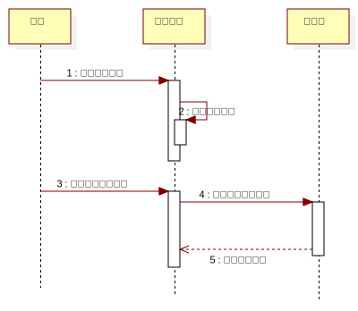

InteractionInstanceSet1
UMLInteraction
PlanAssistant
::
«analysisModel»Analysis Model
::
设置定位时间间隔
::
InteractionInstanceSet1
Description
none
Diagrams

设置定位实践间隔序列图
Participants
用户
设置界面
总设置
Messages
打开设置界面 (用户→设置界面)
显示设置界面 (设置界面→设置界面)
选择定位时间间隔 (用户→设置界面)
设置定位时间间隔 (设置界面→总设置)
显示设置结果 (总设置→设置界面)
Properties
Name
Value
name
InteractionInstanceSet1
stereotype
null
visibility
public
isReentrant
true
Owned Elements
设置定位实践间隔序列图